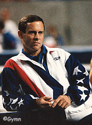

Peter Kormann (USA)
1976 Olympic FX Bronze Medalist

|
Medal Total Olympic Games: 1 Bronze |
Peter was born on June 21, 1955, in Braintree, MA. Until the 10th grade, he worked only FX and V events. Peter attended Southern Connecticut State College, where he was coached by Abie Grosseld. A physical education major, Kormann was the first gymnast to win both the NCAA College and University Division AA titles. He won the USA's only gymnastics medal at the 1976 Olympics, on FX. Kormann was the head coach for the 1996 and 2000 men's Olympic gymnastics team, and was head coach at Ohio State University from 1989 to 1996 (when the Buckeyes won the NCAA team title). He's currently the gymnastics director at Chelsea Piers in New York City.
Competition Results
1973
Massachusetts High School Championships: 1st AA
1974
AAU Nationals: 11th AA
1975
AAU Nationals: 5th AA
Elite Championships: 4th AA
Milk Meet: 4th AA
NCAA Championships: 11th AA
Pan American Games: 8th AA, 1st FX
Pan American Games Trials: 7th AA
1976
Blume Memorial: 5th AA
Champions All: 1st AA
NCAA Championships: 1st AA
Olympics: 7th Team, 15th AA, 3rd FX
Third Olympic Qualifying Competition: 1st Team, 17th AA
USA Olympic Trials: 7th AA
USA-ROM Dual Meet: 6th AA
1977
Champions All: 5th AA
NCAA Championships: 3rd AA
USA Championships: 3rd AA
1978
Sanlam Cup: 1st AA
TBS Cup: 3rd PH, 3rd V
USA-SUI-NOR Meet: 1st Team, 6th AA
USA World Trials: 5th AA
World Championships: 4th Team, 42nd AA (prelims)
1979
Champions All: 2nd AA
Mardi Gras Invitational: 4th AA
US Olympic Festival: 7th R
USA Championships: 5th AA, 3rd FX, 3rd R
1980
GBR-USA Dual Meet: 1st Team, 1st AA
USA Championships: 40th AA, 2nd FX
This page was created on March 18, 2000
and was last updated on December 17, 2006.
© Gymn Forum